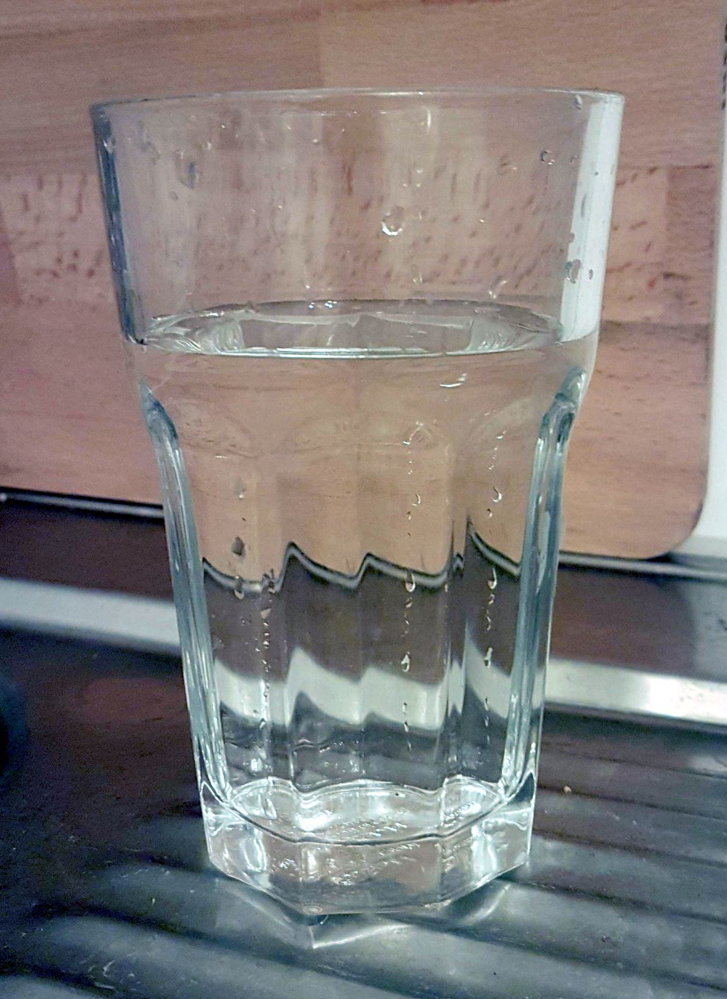

Dedicated shower soap is a waste of money and reaching over to the sink for soap is a bother. The obvious solution here is to just use shampoo. It can't be that bad, can it? One topic leads to another and this in turn leads to accusations of only using soap, not shampoo. Bad ideas might be bad, but they can also be fun, so I've tested and reviewed a number of shampoo alternatives:
Not only stings when you get it in your eyes, but also itches if can't get it all perfectly out of your hair
and off your scalp. It also doesn't really turn into foam at temperatures that don't burn making it
ineffective to actually wash your hair with.
Had to re-wash my hair with regular shampoo afterwards.
2/10
Seems like a decent idea to begin with. Works well enough. Until you realise that you can't get it all out. Until you realise that small bits of soap are stuck in your hair, causing knots and you pulling a tonne of hair out every time you drag a comb through your hair for the next few days. Pain. 5/10
It doesn't really clean your hair, but it doesn't actively hurt you either. 6/10
Shampoo exists for a reason. It works. It gets your hair clean and it gets out of there when you're done. I don't think anyone doubted it to begin with.8/10